1 Εμβαδόν επίπεδης επιφάνειας.
1.1 Θεωρία και Ορισμοί
Μέτρηση Επιφάνειας: Για να μετρήσουμε μια οποιαδήποτε επιφάνεια Α, τη συγκρίνουμε με μια άλλη ομοειδή επιφάνεια Μ, την οποία ονομάζουμε μονάδα μετρήσεως.
Εμβαδόν: Ο αριθμός που προκύπτει από τη σύγκριση της επιφάνειας Α με τη μονάδα Μ ονομάζεται εμβαδόν της επιφάνειας. Ουσιαστικά, το εμβαδόν εκφράζει πόσες φορές η μονάδα μέτρησης χωράει μέσα στην επιφάνεια που μετράμε.
Μονάδες Μέτρησης: Για τη μέτρηση επιφανειών χρησιμοποιούμε ως βασική μονάδα το τετραγωνικό μέτρο (m²), δηλαδή την επιφάνεια ενός τετραγώνου με πλευρά 1 μέτρο. Για μικρότερες επιφάνειες χρησιμοποιούμε τις υποδιαιρέσεις του (dm², cm², mm²) και για μεγαλύτερες τα πολλαπλάσιά του (dam², hm², km², στρέμμα).
Ιδιότητες
Ισοδύναμα ή Ισεμβαδικά Σχήματα: Δύο σχήματα που έχουν το ίδιο εμβαδόν, δηλαδή η ίδια μονάδα μέτρησης χωράει σε αυτά τον ίδιο αριθμό φορών, λέγονται ισοδύναμα ή ισεμβαδικά.
Σχέση Ισότητας και Ισοδυναμίας: Δύο ίσα σχήματα είναι πάντοτε ισοδύναμα, διότι αν τοποθετηθούν το ένα πάνω στο άλλο συμπίπτουν και έχουν την ίδια έκταση. Ωστόσο, δύο ισοδύναμα σχήματα δεν είναι απαραίτητα ίσα (μπορεί να έχουν διαφορετικό σχήμα αλλά το ίδιο εμβαδόν).
Προσθετικότητα: Το εμβαδόν μιας επιφάνειας είναι ίσο με το άθροισμα των εμβαδών των μερών από τα οποία αποτελείται.
Παραδείγματα
- Σύγκριση με τετραγωνάκια: Ένα ορθογώνιο που χωρίζεται σε 12 ίσα τετράγωνα πλευράς 1 cm, έχει εμβαδόν 12 cm².
- Κάλυψη επιφάνειας: Αν μια επιφάνεια καλύπτεται από 40 πλάκες που η καθεμία έχει εμβαδόν 0,15 m², τότε το συνολικό εμβαδόν της επιφάνειας είναι 40 \(\cdot\) 0,15 = 6 m².
- Ισοδύναμα σχήματα: Ένα τετράγωνο με πλευρά 6 cm και ένα παραλληλόγραμμο με βάση 9 cm και ύψος 4 cm είναι ισοδύναμα, γιατί και τα δύο έχουν εμβαδόν 36 cm².
- Μέτρηση με κλασματική μονάδα: Αν χρησιμοποιήσουμε ως μονάδα ένα μικρό τετράγωνο πλευράς 1/5 του μέτρου, τότε αυτό το τετράγωνο έχει εμβαδόν 1/25 m².
- Τρίγωνο και Παραλληλόγραμμο: Ένα τρίγωνο είναι ισοδύναμο με το μισό ενός παραλληλογράμμου που έχει την ίδια βάση και το ίδιο ύψος.
- Δίνονται δύο ορθογώνια τρίγωνα με κάθετες πλευρές 6 cm και ένα τετράγωνο πλευράς 6 cm. Μπορείτε χρησιμοποιώντας τα τρία αυτά σχήματα να κατασκευάσετε νέα σχήματα ίδιου εμβαδού;
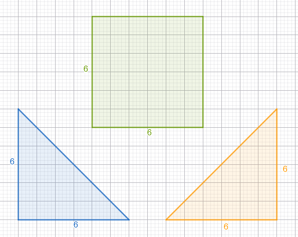
Εάν χρησιμοποιήσουμε σαν μονάδα μέτρησης το τετραγωνάκι 1 cm2 θα έχουμε:
- Εμβαδόν κάθε τριγώνου Ετριγώνου =18 cm2
- Εμβαδόν τετραγώνου Ετετραγώνου =36 cm2
Αρα συνολικό εμβαδόν νέων σχημάτων Ενέων σχημάτων =18+18+36=72 cm2
Κατασκευή νέων σχημάτων
- Μπορούμε να κατασκευάσουμε ένα ορθογώνιο με βάση 12 και ύψος 6
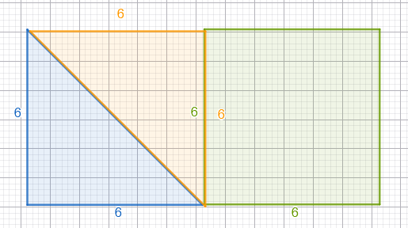
- Μπορούμε να κατασκευάσουμε ένα παραλληλόγραμμο με βάση 12 και ύψος 6
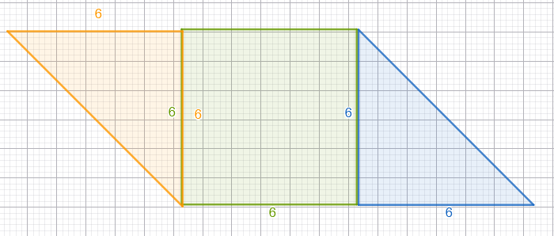
- και ένα ορθογώνιο τρίγωνο με κάθετες πλευρές 12 cm
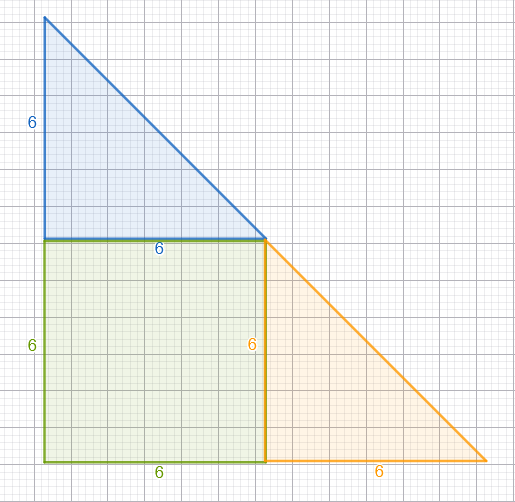
- Μπορείτε να κατασκευάσετε και ένα τραπέζιο με το ίδιο εμβαδό;
Ασκήσεις
- Αν χρησιμοποιήσετε ως μονάδα μέτρησης ένα τετράγωνο πλευράς 1 dm, πόσες τέτοιες μονάδες περιέχονται σε ένα τετραγωνικό μέτρο (m²);.
- Δύο σχήματα \(E_1\) και \(E_2\) αποτελούνται από 10 τετραγωνάκια των 1 cm² το καθένα, αλλά έχουν διαφορετικό σχήμα. Είναι ισοδύναμα; Αιτιολογήστε.
- Πόσες πλάκες (μονάδες επιφάνειας) διαστάσεων 50 cm \(\times\) 30 cm χρειάζονται για να καλυφθεί ένας δρόμος επιφάνειας 735 m²;.
- Σχεδιάστε δύο διαφορετικά σχήματα που να είναι ισοδύναμα με ένα ορθογώνιο που έχει εμβαδόν 12 cm².
- Ένα ορθογώνιο έχει μήκος 4 cm και πλάτος 3 cm. Αν το χωρίσουμε σε τετραγωνάκια πλευράς 1 cm, πόσα τετραγωνάκια θα σχηματιστούν;.
- Δείξτε ότι ένα τετράγωνο πλευράς 53 m είναι ισοδύναμο με ένα οικόπεδο εμβαδού 2809 m².
- Αν ένα πλακάκι έχει εμβαδόν 600 cm², πόσα τέτοια πλακάκια χρειάζονται για να καλυφθεί μια επιφάνεια 1,92 m²;.
- Σχεδιάστε ένα σχήμα που να αποτελείται από 25 μικρά τετράγωνα πλευράς 1/5 m. Ποιο είναι το συνολικό του εμβαδόν σε m²;.
- Ένα τραπέζι αποτελείται από ένα ορθογώνιο και δύο ημικύκλια. Αν το ορθογώνιο μέρος έχει εμβαδόν \(S_1\) και τα δύο ημικύκλια μαζί έχουν εμβαδόν \(S_2\), ποιο είναι το συνολικό εμβαδόν του τραπεζιού;.
1.2 Εξασκήσου
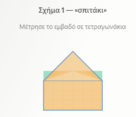
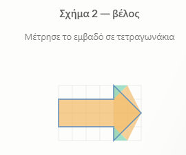
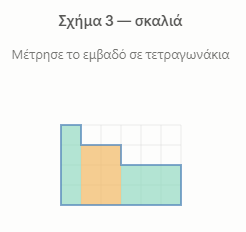
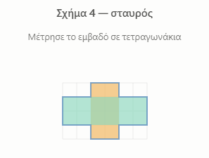
Μετρήστε και το εμβαδόν με τριγωνάκια=μισό τετραγωνάκι
και με ορθογώνια =2 τετργωνάκια. συγκρίνετε όλα τα αποτελέσματα και από τις τρεις μετρήσεις . Πως δικαιολογείτε τα αποτελέσματα;
1.3 Ασκήσεις
- Να υπολογίσετε το εμβαδόν των παρακάτω σχημάτων με μονάδα μέτρησης ενα τετραγωνάκι.
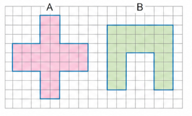
- Να υπολογίσετε το εμβαδόν των παρακάτω σχημάτων με μονάδα μέτρησης ενα τετραγωνάκι.
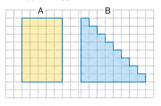
- Να υπολογίσετε το εμβαδόν των παρακάτω σχημάτων με μονάδα μέτρησης ενα τετραγωνάκι.
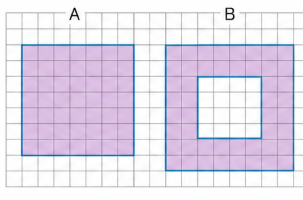
- Να υπολογίσετε το εμβαδόν του παρακάτω σχήματος με μονάδα μέτρησης ενα τριγωνάκι.
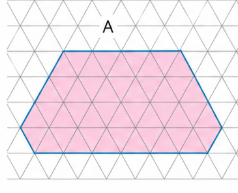
- Να υπολογίσετε το εμβαδόν των παρακάτω σχημάτων με μονάδα μέτρησης ενα τετραγωνάκι.
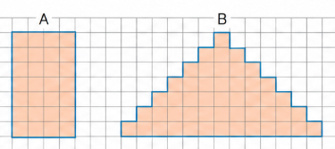
- Να υπολογίσετε το εμβαδόν του παρακάτω σχήματος με μονάδα μέτρησης ενα τριγωνάκι.
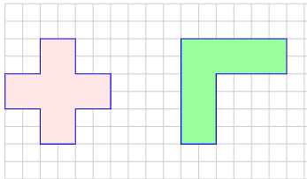
ΚΑΛΗ ΜΕΛΕΤΗ !